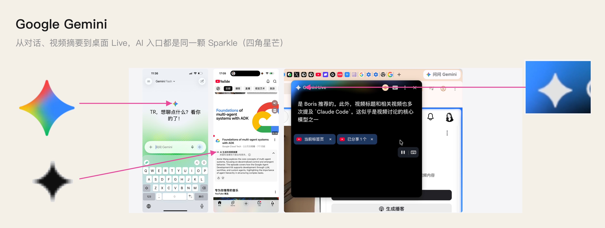
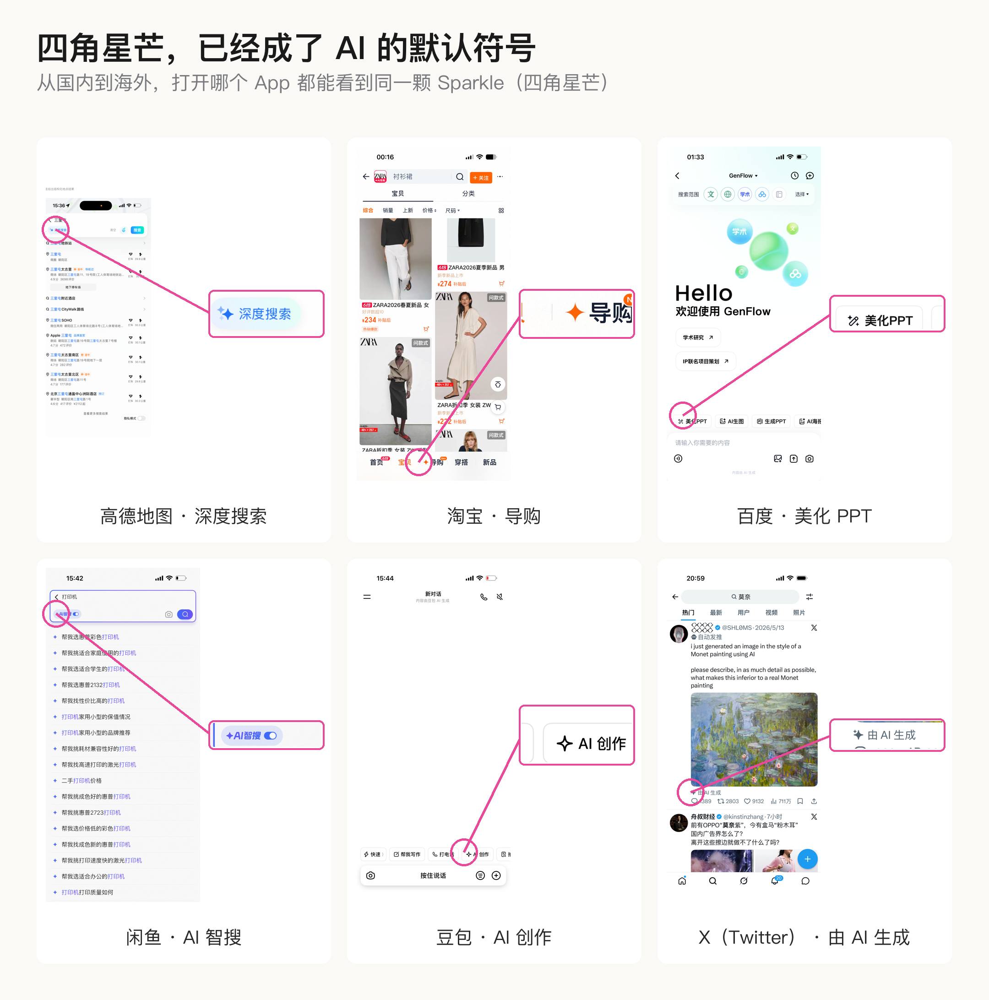
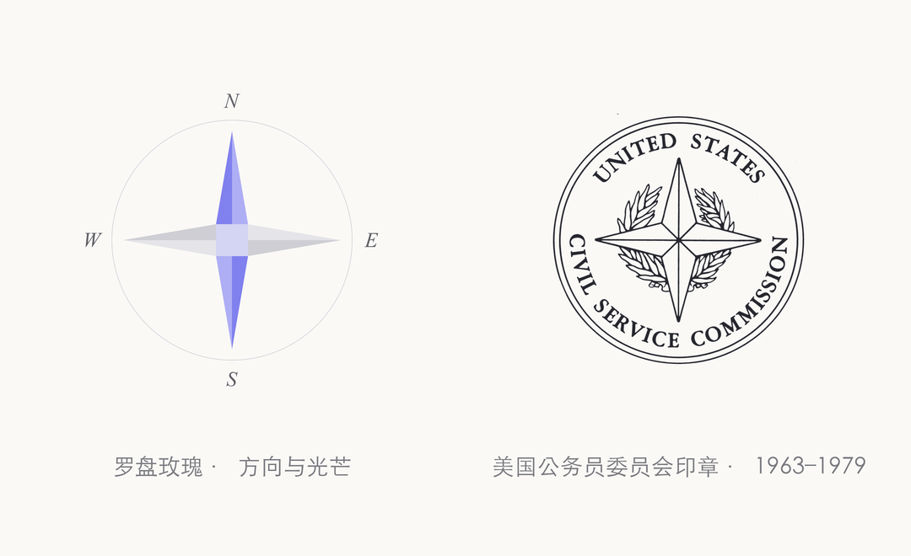
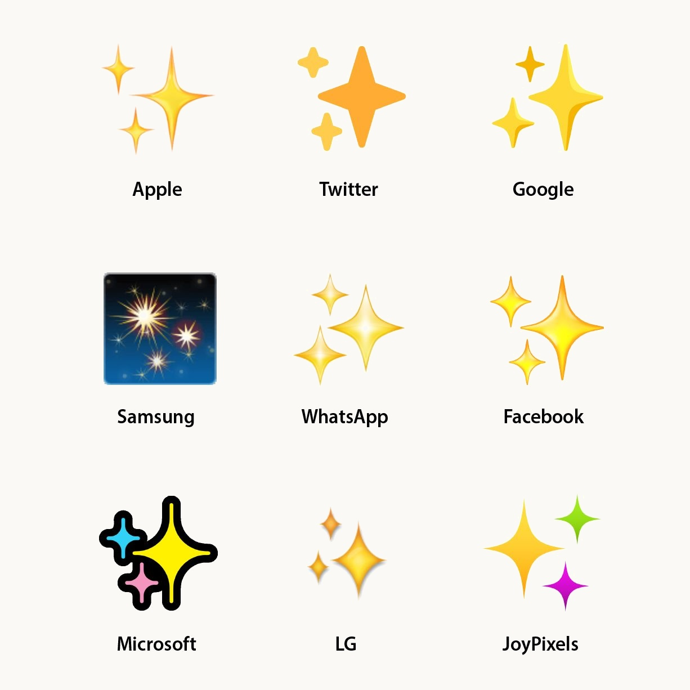
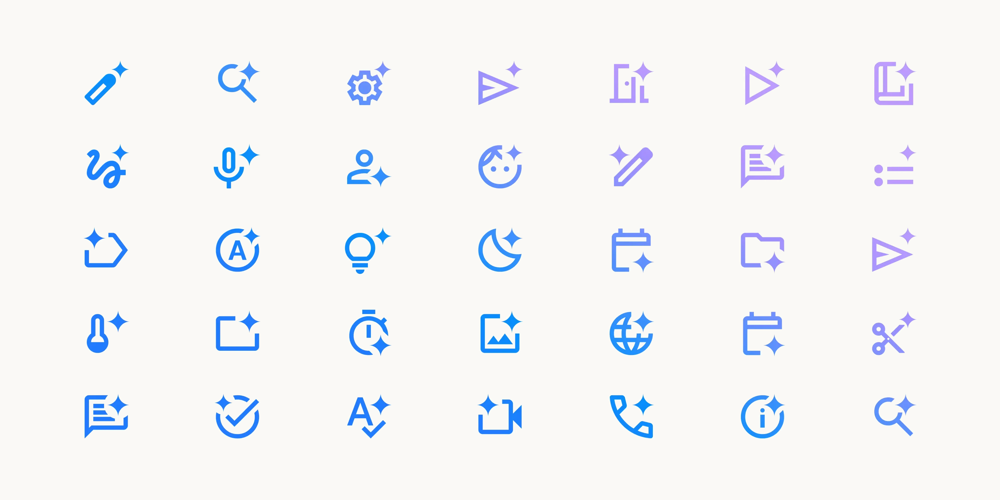
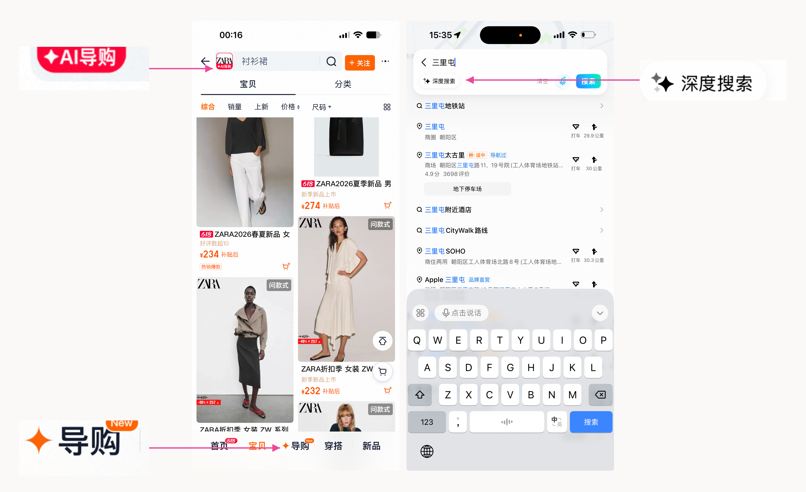
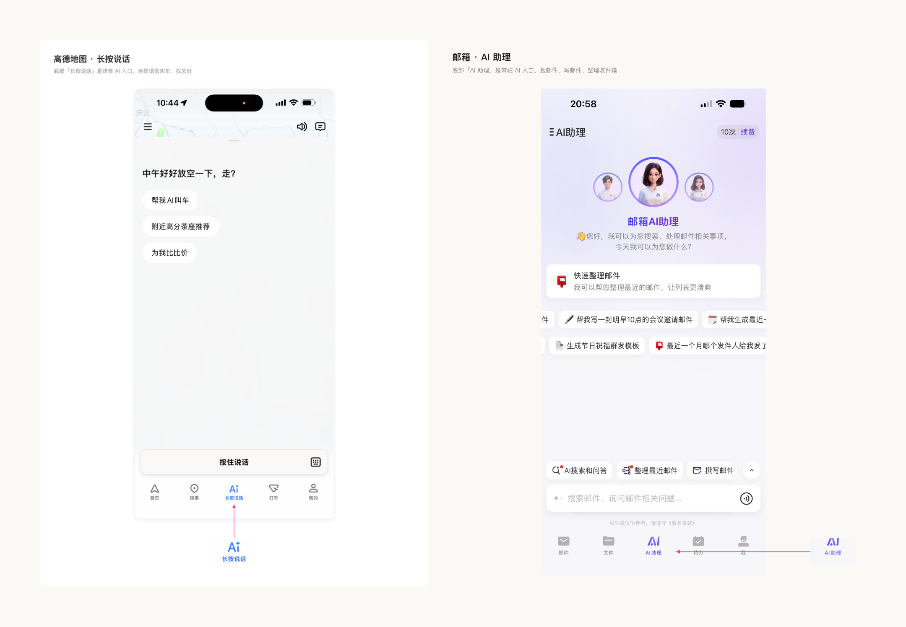
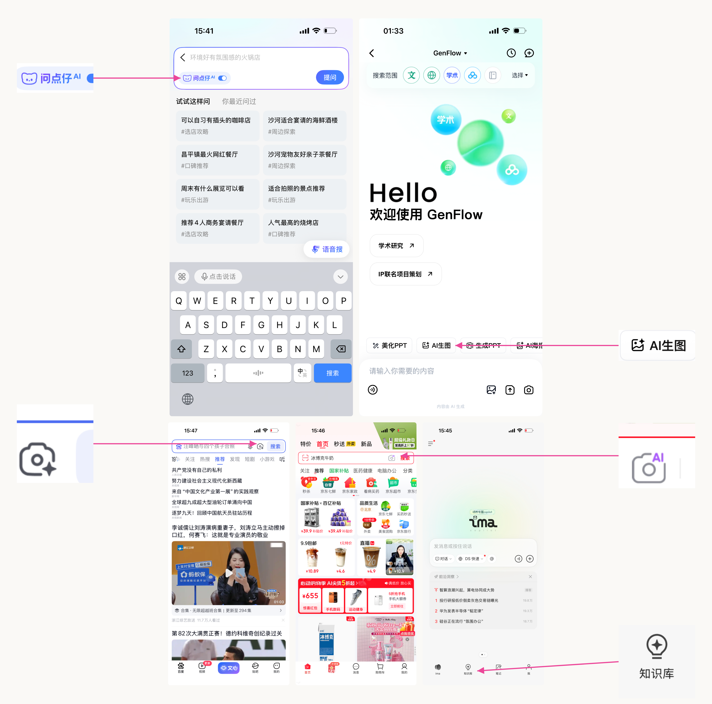
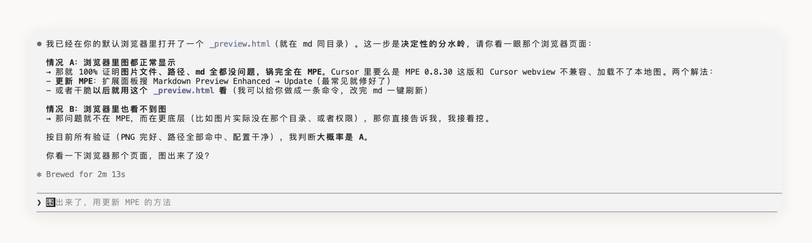
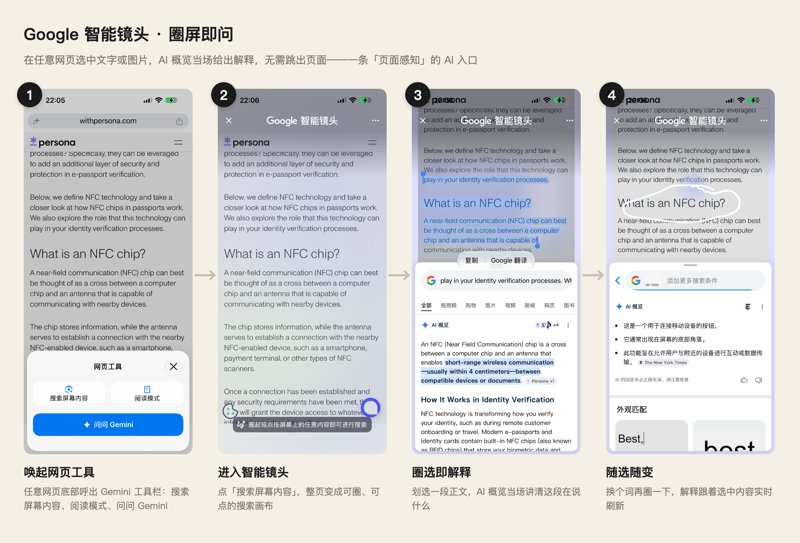

当你要在传统互联网产品加入 AI 功能，你会用什么符号？是不是下意识地想到那个经典的四角星 ✦ 图形？
这个图形叫 Sparkle / Spark （四角星芒），特点是四个尖角向外发散、四边向内凹的形态——让 ClaudeCode或者ChatGPT生成这个图形时，必须加上这描述，不然生成的结果就是另外的四角星。潜意识会想到这个图标，那一定是它在不知不觉中已经渗透进入了日常生活中，慢慢形成了深刻的认知。
icon/图形 用来标记
也是引领风向标
从 Google Gemini 的 AI Native App，到传统 App 中加入的 AI 辅助功能，到处都是这个 spark 的广泛使用。而且，在一个产品内看到一次 Sparkle 之后，保守估计，至少还能看到3个，这个图形就是直白的告诉用户：嘿，这儿有 AI 智能！


当快速抢占用户市场时，新用户对 AI 使用率和留存是关键指标，因此，怎么让用户一眼发现「这儿有 AI」——毫无疑问成为了首要目标，利用用户已经形成的行为认知、使用熟悉图形，就是顺理成章的设计决策。
追溯与认知形成
任何图形都有象征意义，且不是突然出现的，是经过长期的用户和市场验证的共识。
作为“星芒 / 光芒”的图形，非常早。四角星本身可以追溯到更早的装饰符号、导航符号、宗教与徽章系统中。比如四角星和罗盘玫瑰、方向感、光芒感都有关系。这个层面没有一个单一起源。

作为“Sparkles emoji”，可以追溯到 1999 年左右。Emojipedia 记录，✨ Sparkles 最早可以在 1999 年日本 Docomo 的 emoji 系统中找到；后来在 2010 年进入 Unicode 6.0，2015 年进入 Emoji 1.0。它最初更接近日本漫画 / 动漫里的 kira-kira 表达：闪亮、可爱、漂亮、惊叹、魔法感。截至 2023 年底，类似于闪光表情符号的图标也经常在科技平台中用于表示利用人工智能的功能。微软和 推特的闪光特效之前都是五彩缤纷的，而三星的闪光特效 之前则描绘在夜空中，让人联想到烟花。 Twitter 移动应用使用✨ Sparkles 作为按钮，用户可以点击该按钮在时间线上的最新推文和热门推文之间切换。

这恰好是生成式 AI 想给人的感觉。输入一段粗糙的文字、一张普通的图，AI 输出一个更好的版本——和那颗擦一擦就发光的星，是同一种暗示。所以 ✦ 自然被选作 AI 的符号，它不是凭空获得意义，而是把「魔法般焕然一新」这层旧含义，直接搬了过来。
作为 AI 图标，大概是 2022–2024 年被快速普及。谷歌设计引流了这股风潮，并为我们验证过这个 spark 的可行性。2024 年 Google Design 专门写过一篇文章研究 AI sparkle icon，提到它在 Google 各类 AI 功能中被用来指代从图片编辑到生成式 AI 的能力。2023年，随着生成式人工智能的蓬勃发展，谷歌重新设计并统一了旗下所有产品的Sparkle图标——此后，从Material Design到Gemini应用等产品，Sparkle图标被广泛应用于整个谷歌生态系统。2024年，谷歌产品中使用了近100 个不同的AI Sparkle图标，且每个季度的使用量增长高达37%。

还有一层意思是来自互联网之前：✨ 一直是「干净、焕然一新」的符号。洗洁精广告里，碗碟一擦就冒出几颗闪光；护肤品的前后对比图，变好的那一刻总要打上几颗星；游戏里捡到新装备、施了魔法，也用它表示「这儿发生了好事」。表达的共性是「某样东西被毫不费力地变好了」。
给 AI 一个入口
是传统产品最舒服也最浅的解法
细看大多数传统C端 App 加入 AI 功能采用什么符号？大致分为三类做法：
● 第一种是纯图标 ✦。 这个已被市场验证过的成熟图形。 国民级产品淘宝 AI 搜索就这样，直接大量使用spark（四角星芒），它认为用户一眼就能看懂。

● 第二种是纯文字AI， 连那颗星都省了，直接把「AI」两个字母摆出来。高德把底部导航里的 AI 入口干脆叫「AI 长按说话」，落点全在文字上；邮箱类产品更直白，底部立一个「AI 助理」的 tab。这种做法可以看作一种普适化——用户平时听得最多、最常挂在嘴边的就是 AI 这个词，于是把生活里的叫法直接搬到界面上，用字兜底，不赌一个图标能被秒懂。

● 第三种是功能图标配文字 AI 或者四角星芒， 也是最常见的一种。当市面上大部分产品的 AI 入口趋于同质化，对用户的吸引力就会下降。所以有一部分产品选择另辟蹊径。高德在搜索框左上角放一颗四角星加「深度搜索」；大众点评把搜索助手做成一只猫脸，叫「问点仔」；美团底部导航正中间蹲着个吉祥物「小团」，下面写着「按住和我聊聊」。主图标负责场景功能，辅助图形传达 AI，两边都不落下。

把这三种排一排，就是一条「对标准符号视觉化越来越不信任，从而转向图文双重传达设计」的线。纯图标，是相信一个符号能被用户秒懂这里有 AI；图标加文字 AI，是有点不放心、加一层理解更保险；纯文字，是彻底对符号不放心、试图调用平时常听到的 AI 口语认知，用字兜底。
这不只是审美上的差异，是对「用户到底认不认得出 AI」的判断。
它们都把 AI 当成一个要被指出来的功能
不管哪种设计方法，这三类底下藏着一个共同的前提——它们都默认，AI 是产品里一个需要被专门指出来的功能。
得给它找个位置挂上，得提醒用户「 AI 在这儿」，用户才会去用。这恰恰暴露了这批非 AI native产品的处境：它们不是为 AI 驱动的，是在一个早就成型的产品上，给 AI 腾了个角落。AI 是后来进门的客人，所以才需要被引荐、被指认。
真正往前走的产品，已经不在这道题上较劲了。它们在做的，是让「 AI 标记」这个动作本身慢慢变得没必要。从把 AI 藏进流程，到让它贴着用户动作。不必强行告诉这里是AI，而是自然而然地就用起了强大的AI功能。
最好的入口
是没有入口
第一层，AI 底层隐身地全程在跑，但界面上一个字、一颗星都没有，用户只需要聚焦在本身要做的事。
就是平时 vibe coding 的这种感觉。用 Ghostty 或者 Cursor 敲提示词，自动补全功能，按一下 Tab 就自动输入了。没有「AI 补全」按钮，没有任何图标提醒。AI 在这里不是一个挂在边上的醒目功能，而是融入了写提示词这个动作本身的一部分。

这一层的设计判断是反直觉的：AI 越成熟、越被信任，它就越敢隐身*。你不会给「自动对焦」做一个入口，因为它早就是相机的一部分了。哪天某个 AI 功能也强到不用提醒，它的图标就该被撤掉。
划到哪
AI 就在哪
第二层，AI 不待在某个固定入口里，而是贴着你正在看的内容，随手就能唤起。
Google 把这套做进了浏览器和搜索里，这个功能叫搜索屏幕内容。在屏幕上看到任何东西——一张图、一段视频、一个不认识的词——圈一下，它就直接基于这块内容给你结果，让 AI 自动屏幕感知省去了输入提示词这个动作。

这一层和第一层的区别在于：第一层是 AI 自动把事做了，你甚至无感；这一层是你主动召唤，但召唤的成本被压到了最低——不打断、不切换、不用手动输入。
全是 AI
就不用标 AI
第三层，产品不是「加了 AI」，而是整个围着 AI 重做。到这一步，它没有可以强调「AI 入口」——因为它从头到尾全是 AI，没什么可标记的。
典型的例子是 Perplexity ，整页都是 AI 生成的答案。打开就是问、就是答，「搜索」这件事被重做了一遍，没有哪个角落需要再提醒你「这里有 AI」。
换个品类更明显。Midjourney、即梦、可灵这些，打字就出图、出视频。生成本身就是产品，「这里有 AI」这句话也就没了指认的对象。而同样的能力进入 Figma AI agent 却仍然采用 Sparkle 了。
当 AI 不再是产品里的一个功能，而是产品本身，那个「特意传达有 AI」的图标，就和 2010 年给每个联网功能画一朵云一样，迟早因为太理所当然而被取消。
AI 标记是一个特定的阶段点
不是终点
眼下大多传统产品还卡在满屏的小星星记和那个对话 Agent 之间，标记做得越来越精致，名字起得越来越可爱，就像把「客人」介绍得更热情，没真把它请进门当主人。
这是一个「AI 还需要被指认」的过渡期留下的印记。
往后看，当每个产品从底层就被 AI 驱动，AI 不再是挂在某处的一个功能，而是产品本身运转的方式，这些标签会自然地慢慢褪掉。因为整个产品，就是 AI。
本文部分图标素材来自 Emojipedia 与 Google Design。